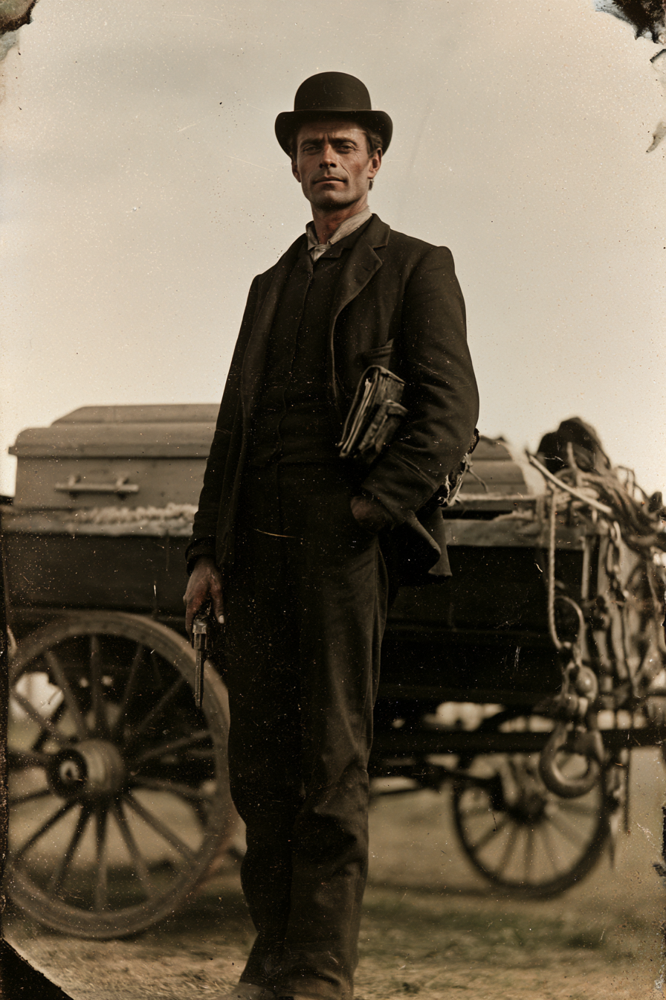

Archetyp: BOUNTY HUNTER (Kopfgeldjäger)
Einsteigerfigur: eine Fertigkeit, ein Beruf, ein Wagen für die ganze Posse.
„Ich jage sie nicht. Ich hole sie ab. Der Unterschied ist, dass ich für beides bezahlt werde.“
| Agility | d8 | 2 |
| Smarts | d6 | 1 |
| Spirit | d6 | 1 |
| Strength | d4 | 0 |
| Vigor | d6 | 1 |
| Skill | Attr. | Die | Pts. |
|---|---|---|---|
| Shooting | Agi | d8 | 3 |
| Fighting | Agi | d6 | 2 |
| Riding | Agi | d6 | 2 |
| Survival | Sma | d6 | 2 |
| Notice | Sma | d6 | 1 |
| Intimidation | Spi | d4 | 1 |
| Healing | Sma | d4 | 1 |
| Weapon | Range | Damage | AP | RoF | Wt. | Cost |
|---|---|---|---|---|---|---|
| Colt Peacemaker (.45) | 12/24/48 | 2W6+1 | 1 | 1 | 4 | $15 |
| 6 Schuss | ||||||
| Messer, Bowie | – | Stä+W4+1 | 1 | – | 1 | $4 |
| PB 1 · Werkzeug zuerst | ||||||
Guts: Furchtprobe neu würfeln · Quick Draw: Benny für eine Extra-Aktion gibt zwei Karten
Danger Sense: +2 gegen Überraschung, bei Steigerung ein Zug voraus
Hintergrund. Doak übernahm mit dreiundzwanzig das Bestattungsgeschäft seines Onkels in Cheyenne und stellte innerhalb eines Jahres fest, dass die Hälfte seiner Kundschaft mit einem Steckbrief in der Innentasche ankam. Er stellte auch fest, dass die Prämie in der Regel höher war als das, was die Angehörigen für die Kiste zahlen konnten. Seither fährt er den Wagen selbst hinaus: er weiß, wohin sie reiten, weil er weiß, wo die Leute begraben liegen, zu denen sie zurückwollen. Er hat vierhundertelf Tote gewaschen, angezogen und eingesargt und führt darüber Buch. Er sagt jedem, der davon anfängt, sehr freundlich, dass keiner davon sich je bewegt hat.
Build. Geschicklichkeit W8, Verstand W6, Geist W6, Stärke W4, Konstitution W6 · Parade 5, Robustheit 5 Schießen W8, Kämpfen W6, Reiten W6, Überleben W6, Bemerken W6, Einschüchtern W4, Heilen W4 Talente: Guts (Mumm), Quick Draw (Schnell Ziehen), Danger Sense (Sechster Sinn) Handicaps: Vow (Schwur) — Major: jede Leiche kommt zu ihren Leuten zurück, auch die, für die niemand zahlt, auch die des Gesuchten · Cautious (Vorsichtig) — Minor · Doubting Thomas (Zweifler) — Minor Stärke W4 ist Absicht und kein Versehen: er trägt nichts, er kurbelt. Das ist die einzige Regel an dieser Figur, die man erklären muss.
Aufhänger. Im Juli musste er ein Grab in Sidney öffnen lassen, weil die Witwe den Sarg nach Ohio überführen wollte. Es war seine eigene Arbeit, seine eigenen Nägel, sein eigenes Zinkband. Der Deckel war von innen zerkratzt. Er hat es der Witwe nicht gesagt, er hat den Sarg neu verschlossen und verladen, und seither macht er den Nachtritt nicht mehr allein. Im Kontobuch steht auf der letzten Seite eine zweite Liste, die keine Preise hat.
Notizen. So sehen die sechs Zeilen des Bogens am Tisch aus.
Warum es Spaß macht. Du bringst der Gruppe drei Dinge mit, die Anfängerrunden immer fehlen: einen Wagen, einen Grund, warum die Posse überhaupt zusammen reist, und einen Mann, den Furcht nicht so leicht umwirft. Der Witz der Figur schreibt sich selbst — der Zweifler in einer Welt, in der alles wahr ist, und ein Berufsstand, der jedes Abenteuer mit „ich kenne den Friedhof“ beginnen darf.
Regelgrundlage: Regelnotizen · Archetyp-Notizen